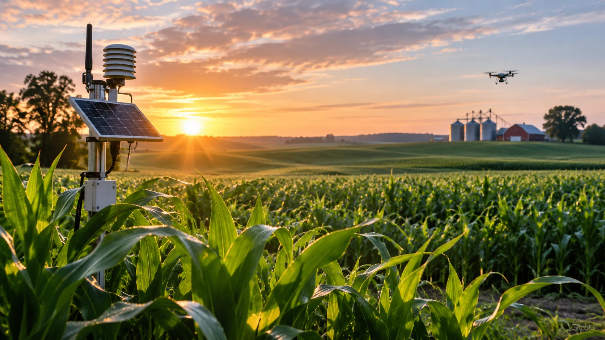

USDA Adds AI Checks to Crop Reports After Corn Data Error
The department plans to use an internal AI tool to flag anomalies ahead of its November 10 crop report, following incorrect September corn-yield calculations.

The U.S. Department of Agriculture plans to use an internally developed artificial intelligence tool to check crop-production data ahead of its November 10 report, following an error that led to corrections in September corn-yield estimates. Officials described the initiative to Reuters on November 6 as an additional verification measure, not a replacement for the department's statistical staff.
The system will flag unusual or inconsistent figures for human review before publication. Its first task is straightforward: identify mistakes in the processing of existing data, rather than produce autonomous forecasts of U.S. agricultural output.
What went wrong with the corn figures
The error involved incorrect acreage weights used to combine observations from irrigated and non-irrigated cornfields in Kansas and Nebraska. The USDA's National Agricultural Statistics Service said the underlying field observations were valid, but the calculation combined them incorrectly.
In an official October 24 notice, the department reported that the corrected September yield forecast for Kansas fell three bushels per acre to 118, while Nebraska rose five bushels per acre to 182. The corresponding U.S. yield estimate increased 0.3 bushels per acre to 178.8.
The error also affected September plant-population and ear-count figures. After a review, NASS said the October corn-yield and production forecasts remained unchanged. The distinction matters: the correction changed the earlier September report, not the validated October estimates.
USDA officials told Reuters that better checking should have caught the processing mistake before publication. Under Secretary Scott Hutchins said the new AI system would supplement existing procedures by looking for data anomalies. The agency has not publicly demonstrated that it can identify every kind of reporting error.
The NASS notice also committed the agency to additional pre-publication checks of acreage weights and objective-yield calculations. The AI tool is one part of a broader validation effort, rather than a replacement for conventional quality control.
Why the corrections matter to commodity markets
USDA crop figures influence prices for corn and other agricultural commodities, as well as decisions by farmers, livestock producers, processors and exporters. Yield estimates affect expectations for supply and can influence planting, procurement and hedging decisions.
A mistake at the state level may have a smaller national effect but still matter to businesses concentrated in the affected region. Market participants therefore need to know both the size of a correction and the stage at which it occurred.
Government statistical revisions are not inherently evidence of poor data quality; estimates can legitimately change as new information arrives. A processing error is different because it introduces an avoidable inconsistency in the calculation. The same distinction between new evidence and later adjustments appears in TTN Finance's coverage of revisions to U.S. employment statistics.
USDA officials said staffing reductions were not the cause of the September corn error. That statement addresses this incident; it does not settle broader questions about resources for agricultural statistics. Farmers and analysts have raised concerns about revisions and reliability in other reports, including beef export sales data.
A narrow role for artificial intelligence
An anomaly-detection tool can compare incoming figures with expected ranges and flag combinations that deserve further inspection. When different acreage categories are combined, a validator may help identify inconsistent inputs or results that depart sharply from previous patterns.
A flagged figure is not necessarily wrong. Weather, new cultivation practices and changing acreage can produce genuine outliers. Conversely, an automated system may miss errors it has not been designed or tested to recognize. Human analysts must determine whether a warning reflects a technical mistake or a valid agricultural change.
For that reason, the USDA has described the technology as a second check, not an automated forecaster. The agency has not released statistics on false positives, missed errors or the system's measured performance in routine production.
The approach illustrates a practical business use of AI: auditing operational data before it reaches decision-makers. TTN Finance's analysis of AI productivity and human oversight addresses the same distinction between automation and verifiable operational results.
The department also announced a separate agricultural-data modernization effort in September, including wider use of satellite imagery and improved data collection. Those initiatives may improve how information is gathered, while the new validator addresses the different problem of checking figures before release.
November 10 will be the first test
The next scheduled crop-production report provides an early opportunity to assess how the additional checks operate. A release without a repeat error would be encouraging but would not, by itself, prove the system's effectiveness.
A more meaningful assessment would require evidence of how many potential mistakes were flagged, which were confirmed and whether review procedures prevented inaccurate figures from being published. USDA has not supplied those measures yet.
The immediate significance is limited but concrete: after correcting an avoidable calculation error, the department is adding AI-assisted screening to an established statistical process. Credibility will depend on the accuracy and transparency of its future reports, not on the presence of AI software alone.